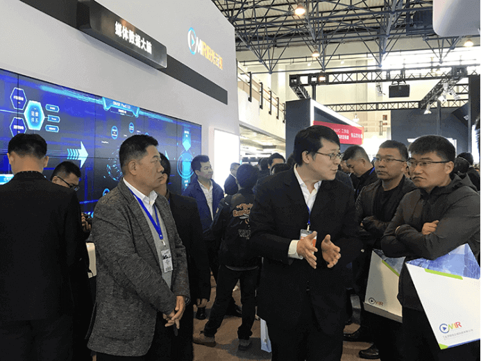
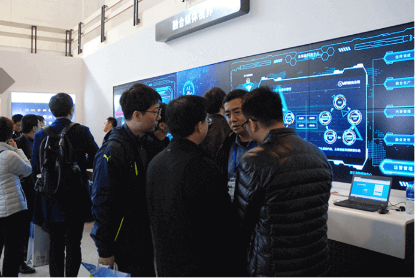
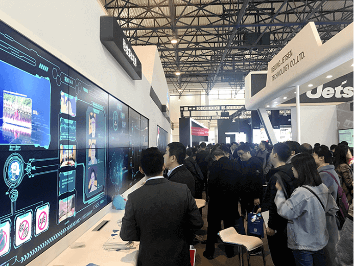

CCBN2019|阳光云视：智慧融媒，耀眼出展
2019年3月21日，第二十七届中国国际广播电视信息网络展览会（CCBN2019）在中国国际展览中心开幕，本届展会以“融合引领视界，智慧引领未来”为主题，全方位展示广电行业的新趋势、新技术。阳光云视作为广电领域专业技术服务提供商，携ONAIR产品系列：媒体数据大脑、媒体云、视频云等多种解决方案亮相4号馆 4302B展位，深化台网协作，助力行业实现“全程、全效、全员、全息”的四全媒体。

随着5G时代的逐步临近，广电行业面对当下的“机遇期”和“窗口期”，既要解决好“公共服务”和“市场服务”的边界问题，又要以优质内容引导差异化创新，用智能融合提供引导能力。展会中阳光云视ONAIR PaaS 3.0 媒体数据大脑，着重于标准化建设，从全局视角出发，将运营、应用、运维、安全及管理等各体系的数据转换成标准接进来，通过“媒体智能大脑平台”，实现信息的大综合、大集成和大协同；为建设媒体智慧服务和管理提供应用决策。
时下中央对媒体融合高度关注，重视县级融媒体中心的建设，阳光云视专门针对省、市、县媒体提出联合解决方案，在大量的底层工具，智能服务满足省级平台业务使用的同时，可管可控、弹性伸缩的属性使其也可以满足全省各市、县级融媒的运营支持，在重点的县级融媒体建设中，提供内容资源整合、媒体+党建+政务+公共+增值服务，并提供技术、内容、流量等多种运营支撑。

在最重要的媒体内容生产过程中，ONAIR视频云智能生产流水线，覆盖视频采-编-播-存-发全流程，结合智能专利技术实现内容安全审核，智能摘要提取、智能封面、人脸识别、声纹识别、标签分类、利用NLP完成智能撰稿、关键帧剪辑等媒体全要素智能生产。

创新不是所作的改造，而是坚持不懈的态度，阳光云视一直以来秉承创新精神，聚焦行业需求，以云计算整合最先进的视频生产工具为基本理念，助力推动智慧广电发展。